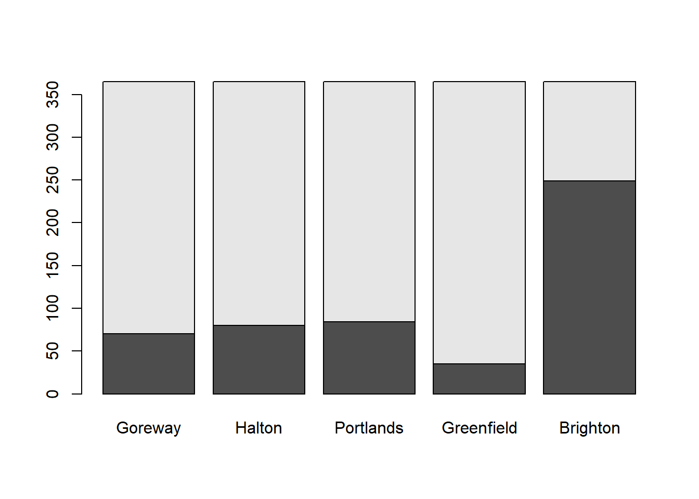
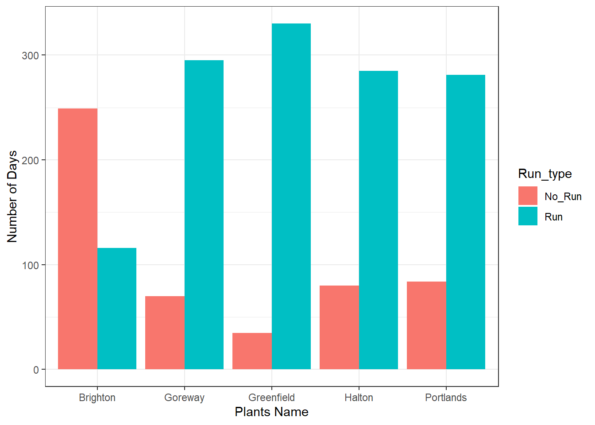
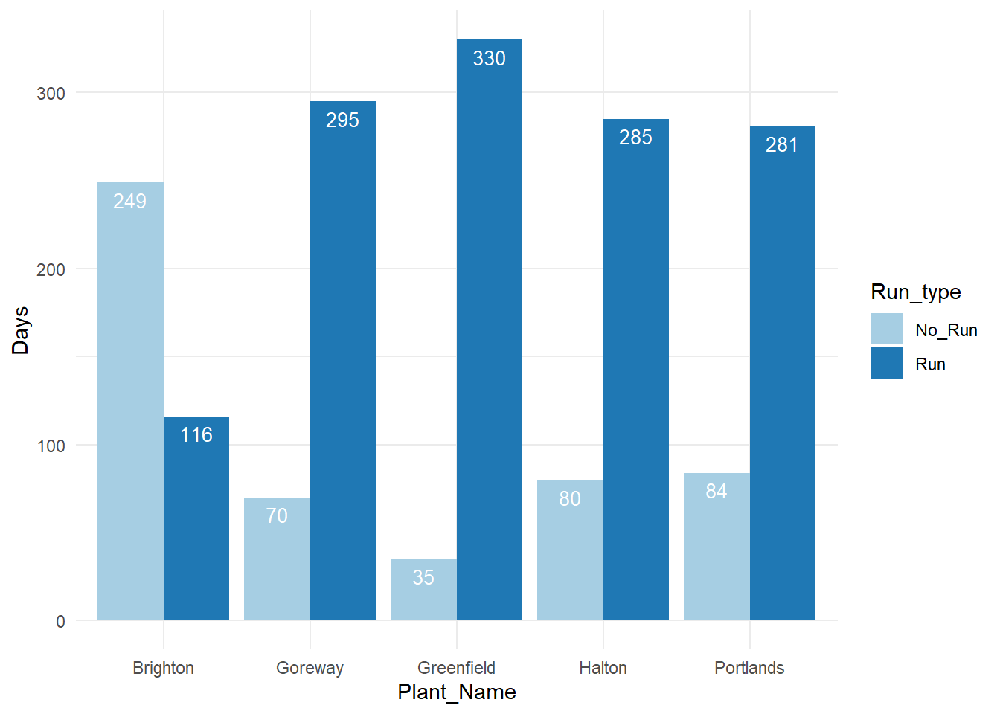

library(readxl)
library(lubridate)
library(plyr)
library(dplyr)
library(tidyr)Natural gas combine cycle plant generation depends upon market demand . Attemp has been made to calculate the number of days plant was supplying power to grid.It is a first attempt for a comparitive study with counting wind generating days
G11<-read_excel("GOC-2011.xlsx")## New names:
## * `` -> ...3G11$DATE <- as.Date(G11$DATE, format = "%Y-%m-%d") # Changing to Date format
colnames(G11)[colnames(G11)=="DATE"] <- "Date"Dz_11Total<-G11 %>% group_by(Date) %>% summarize(Total_2011_Gen=sum(`TOTAL`),n=n())
Dz_11Goreway<-G11 %>% group_by(Date) %>% summarize(Goreway_2011_Total=sum(`SITHE GOREWAY`),n=n())
Dz_11Halton<-G11 %>% group_by(Date) %>% summarize(Halton_2011_Total=sum(HALTONHILLS),n=n())
Dz_11Portland<-G11 %>% group_by(Date) %>% summarize(Portlands_2011_Total=sum(PORTLANDS),n=n())
Dz_11Greenfeild<-G11 %>% group_by(Date) %>% summarize(GEC_2011_Total=sum(`GREENFIELD ENERGY CENTRE`),n=n())
Dz_11Brighton<-G11 %>% group_by(Date) %>% summarize(Brigton_2011_Total=sum(`BRIGHTON BEACH`),n=n())
Dz_11GB<-cbind(Dz_11Total[,-3],Dz_11Goreway[,2],Dz_11Halton[,2],Dz_11Portland[,2],Dz_11Greenfeild[,2],Dz_11Brighton[,2])
Dz_11Goreway## # A tibble: 365 x 3
## Date Goreway_2011_Total n
## <date> <dbl> <int>
## 1 2011-01-01 0 24
## 2 2011-01-02 0 24
## 3 2011-01-03 5807 24
## 4 2011-01-04 8077 24
## 5 2011-01-05 10289 24
## 6 2011-01-06 12158 24
## 7 2011-01-07 6709 24
## 8 2011-01-08 9799 24
## 9 2011-01-09 9480 24
## 10 2011-01-10 14599 24
## # ... with 355 more rowsany(is.na(Dz_11GB))## [1] FALSEsum(is.na(Dz_11GB))## [1] 0colSums(is.na(Dz_11GB)) ## Date Total_2011_Gen Goreway_2011_Total
## 0 0 0
## Halton_2011_Total Portlands_2011_Total GEC_2011_Total
## 0 0 0
## Brigton_2011_Total
## 0nrow(Dz_11GB)## [1] 365Dz_11GB<-na.omit(Dz_11GB)
any(is.na(Dz_11GB))## [1] FALSEnrow(Dz_11GB)## [1] 365head(Dz_11GB)## Date Total_2011_Gen Goreway_2011_Total Halton_2011_Total
## 1 2011-01-01 406989 0 0
## 2 2011-01-02 419951 0 0
## 3 2011-01-03 458408 5807 6400
## 4 2011-01-04 459558 8077 5747
## 5 2011-01-05 473780 10289 7441
## 6 2011-01-06 473072 12158 8003
## Portlands_2011_Total GEC_2011_Total Brigton_2011_Total
## 1 2488 0 0
## 2 2834 0 0
## 3 0 4319 3920
## 4 0 2181 1661
## 5 0 4157 4184
## 6 2486 9741 3716any(is.na(Dz_11Goreway))## [1] FALSEsum(is.na(Dz_11Goreway))## [1] 0colSums(is.na(Dz_11Goreway)) ## Date Goreway_2011_Total n
## 0 0 0nrow(Dz_11Goreway)## [1] 365Dz_11Goreway<-na.omit(Dz_11Goreway)
any(is.na(Dz_11Goreway))## [1] FALSEnrow(Dz_11Goreway)## [1] 365head(Dz_11Goreway)## # A tibble: 6 x 3
## Date Goreway_2011_Total n
## <date> <dbl> <int>
## 1 2011-01-01 0 24
## 2 2011-01-02 0 24
## 3 2011-01-03 5807 24
## 4 2011-01-04 8077 24
## 5 2011-01-05 10289 24
## 6 2011-01-06 12158 24Goreway_U_Status_11<-cut(Dz_11Goreway$Goreway_2011_Total,breaks = c(0,100,50000),labels = c(0,1))
Goreway_U_Status_11<-cbind(Dz_11Goreway,Goreway_U_Status_11)
#Goreway_U_Status_11
any(is.na(Goreway_U_Status_11))## [1] TRUEGoreway_U_Status_11[is.na(Goreway_U_Status_11)]=0
head(Goreway_U_Status_11)## Date Goreway_2011_Total n Goreway_U_Status_11
## 1 2011-01-01 0 24 0
## 2 2011-01-02 0 24 0
## 3 2011-01-03 5807 24 1
## 4 2011-01-04 8077 24 1
## 5 2011-01-05 10289 24 1
## 6 2011-01-06 12158 24 1##aa_G_10<-count(Goreway_U_Status_10,"Goreway_U_Status_10")
aa_G_11<-Goreway_U_Status_11 %>% count(Goreway_U_Status_11)
names(aa_G_11)[1]="Running_Status"
names(aa_G_11)[2]="Goreway_Run"
aa_G_11## # A tibble: 2 x 2
## Running_Status Goreway_Run
## <fct> <int>
## 1 0 70
## 2 1 295any(is.na(Dz_11Halton))## [1] FALSEsum(is.na(Dz_11Halton))## [1] 0colSums(is.na(Dz_11Halton)) ## Date Halton_2011_Total n
## 0 0 0nrow(Dz_11Halton)## [1] 365Dz_11Halton<-na.omit(Dz_11Halton)
any(is.na(Dz_11Halton))## [1] FALSEnrow(Dz_11Halton)## [1] 365head(Dz_11Halton)## # A tibble: 6 x 3
## Date Halton_2011_Total n
## <date> <dbl> <int>
## 1 2011-01-01 0 24
## 2 2011-01-02 0 24
## 3 2011-01-03 6400 24
## 4 2011-01-04 5747 24
## 5 2011-01-05 7441 24
## 6 2011-01-06 8003 24Halton_U_Status_11<-cut(Dz_11Halton$Halton_2011_Total,breaks = c(0,100,50000),labels = c(0,1))
Halton_U_Status_11<-cbind(Dz_11Halton,Halton_U_Status_11)
Halton_U_Status_11[is.na(Halton_U_Status_11)]=0
#Halton_U_Status_11
#aa_H_10<-count(Halton_U_Status_10,"Halton_U_Status_10")
aa_H_11<-Halton_U_Status_11 %>% count(Halton_U_Status_11)
names(aa_H_11)[1]="Running_Status"
names(aa_H_11)[2]="Halton_Run"
aa_H_11## # A tibble: 2 x 2
## Running_Status Halton_Run
## <fct> <int>
## 1 0 80
## 2 1 285any(is.na(Dz_11Portland))## [1] FALSEsum(is.na(Dz_11Portland))## [1] 0colSums(is.na(Dz_11Portland)) ## Date Portlands_2011_Total n
## 0 0 0nrow(Dz_11Portland)## [1] 365Dz_11Portland<-na.omit(Dz_11Portland)
any(is.na(Dz_11Portland))## [1] FALSEnrow(Dz_11Portland)## [1] 365head(Dz_11Portland)## # A tibble: 6 x 3
## Date Portlands_2011_Total n
## <date> <dbl> <int>
## 1 2011-01-01 2488 24
## 2 2011-01-02 2834 24
## 3 2011-01-03 0 24
## 4 2011-01-04 0 24
## 5 2011-01-05 0 24
## 6 2011-01-06 2486 24Portlands_U_Status_11<-cut(Dz_11Portland$Portlands_2011_Total,breaks = c(0,100,50000),labels = c(0,1))
Portlands_U_Status_11<-cbind(Dz_11Portland,Portlands_U_Status_11)
Portlands_U_Status_11[is.na(Portlands_U_Status_11)]=0
#Portlands_U_Status_11
#aa_P_10<-count(Portlands_U_Status_10,"Portlands_U_Status_10")
aa_P_11<-Portlands_U_Status_11 %>% count(Portlands_U_Status_11)
names(aa_P_11)[1]="Running_Status"
names(aa_P_11)[2]="Portland_Run"
aa_P_11## # A tibble: 2 x 2
## Running_Status Portland_Run
## <fct> <int>
## 1 0 84
## 2 1 281any(is.na(Dz_11Greenfeild))## [1] FALSEsum(is.na(Dz_11Greenfeild))## [1] 0colSums(is.na(Dz_11Greenfeild)) ## Date GEC_2011_Total n
## 0 0 0nrow(Dz_11Greenfeild)## [1] 365Dz_11Greenfeild<-na.omit(Dz_11Greenfeild)
any(is.na(Dz_11Greenfeild))## [1] FALSEnrow(Dz_11Greenfeild)## [1] 365head(Dz_11Greenfeild)## # A tibble: 6 x 3
## Date GEC_2011_Total n
## <date> <dbl> <int>
## 1 2011-01-01 0 24
## 2 2011-01-02 0 24
## 3 2011-01-03 4319 24
## 4 2011-01-04 2181 24
## 5 2011-01-05 4157 24
## 6 2011-01-06 9741 24Greenfeild_U_Status_11<-cut(Dz_11Greenfeild$GEC_2011_Total,breaks = c(0,100,50000),labels = c(0,1))
Greenfeild_U_Status_11<-cbind(Dz_11Greenfeild,Greenfeild_U_Status_11)
Greenfeild_U_Status_11[is.na(Greenfeild_U_Status_11)]= 0
#Greenfeild_U_Status_11
#aa_GEC_10<-count(Greenfeild_U_Status_10,"Greenfeild_U_Status_10")
aa_GEC_11<-Greenfeild_U_Status_11 %>% count(Greenfeild_U_Status_11)
names(aa_GEC_11)[1]="Running_Status"
names(aa_GEC_11)[2]="Greenfeild_Run"
aa_GEC_11## # A tibble: 2 x 2
## Running_Status Greenfeild_Run
## <fct> <int>
## 1 0 35
## 2 1 330any(is.na(Dz_11Brighton))## [1] FALSEsum(is.na(Dz_11Brighton))## [1] 0colSums(is.na(Dz_11Brighton)) ## Date Brigton_2011_Total n
## 0 0 0nrow(Dz_11Brighton)## [1] 365Dz_11Brighton<-na.omit(Dz_11Brighton)
any(is.na(Dz_11Brighton))## [1] FALSEnrow(Dz_11Brighton)## [1] 365head(Dz_11Brighton)## # A tibble: 6 x 3
## Date Brigton_2011_Total n
## <date> <dbl> <int>
## 1 2011-01-01 0 24
## 2 2011-01-02 0 24
## 3 2011-01-03 3920 24
## 4 2011-01-04 1661 24
## 5 2011-01-05 4184 24
## 6 2011-01-06 3716 24Brighton_U_Status_11<-cut(Dz_11Brighton$Brigton_2011_Total,breaks = c(0,100,50000),labels = c(0,1))
Brighton_U_Status_11<-cbind(Dz_11Brighton,Brighton_U_Status_11)
Brighton_U_Status_11[is.na(Brighton_U_Status_11)]=0
#Brighton_U_Status_11
#aa_BB_10<-count(Brighton_U_Status_10,"Brighton_U_Status_10")
aa_BB_11<-Brighton_U_Status_11 %>% count(Brighton_U_Status_11)
names(aa_BB_11)[1]="Running_Status"
names(aa_BB_11)[2]="Brighton_Run"
aa_BB_11## # A tibble: 2 x 2
## Running_Status Brighton_Run
## <fct> <int>
## 1 0 249
## 2 1 116U_R_Status_11<-cbind(aa_G_11,aa_H_11[,2],aa_P_11[,2],aa_GEC_11[,2],aa_BB_11[,2])
names(U_R_Status_11)[2]="Goreway"
names(U_R_Status_11)[3]="Halton"
names(U_R_Status_11)[4]="Portlands"
names(U_R_Status_11)[5]="Greenfield"
names(U_R_Status_11)[6]="Brighton"Barplot
count<-as.matrix(U_R_Status_11[,-1])
barplot(count)
library(ggplot2)
Plant_Name <-rep(c("Goreway", "Halton", "Portlands", "Greenfield", "Brighton"), 2)
No_Run<-c(U_R_Status_11[1,2],U_R_Status_11[1,3],U_R_Status_11[1,4],U_R_Status_11[1,5],U_R_Status_11[1,6])
Run<-c(U_R_Status_11[2,2],U_R_Status_11[2,3],U_R_Status_11[2,4],U_R_Status_11[2,5],U_R_Status_11[2,6])
Days <-c(No_Run, Run)
Run_type <-c(rep("No_Run", 5), rep("Run",5))
mydata <-data.frame(Plant_Name, Days)
mydata## Plant_Name Days
## 1 Goreway 70
## 2 Halton 80
## 3 Portlands 84
## 4 Greenfield 35
## 5 Brighton 249
## 6 Goreway 295
## 7 Halton 285
## 8 Portlands 281
## 9 Greenfield 330
## 10 Brighton 116p <-ggplot(mydata, aes(Plant_Name, Days))
p +geom_bar(stat= "identity",aes(fill=Run_type),position="dodge")+xlab("Plants Name")+ylab("Number of Days")+theme_bw() ### Labels to a dodged barplot
ggplot(data=mydata, aes(x=Plant_Name, y=Days, fill=Run_type)) +
geom_bar(stat="identity", position=position_dodge())+
geom_text(aes(label=Days), vjust=1.6, color="white",
position = position_dodge(0.9), size=3.5)+
scale_fill_brewer(palette="Paired")+
theme_minimal()